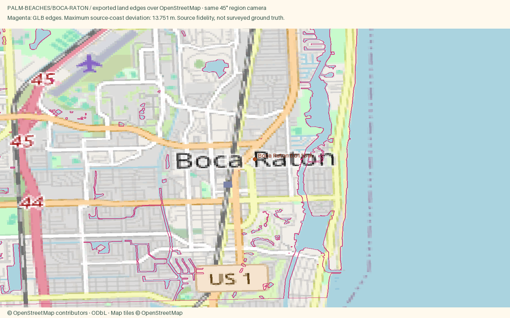

Boca Raton
Open atlas · Accuracy CSV · Sourced medians
Region
Boca Raton
Open districtA polished city of pink Mediterranean buildings, big parks and beaches kept natural behind a line of dunes.
Source alignment

Manual fixes
- District palettes were selected editorially from local or regional character references; these colors are not a surveyed facade inventory.
- Added seven omitted coastal and lagoon towns after checking the official Palm Beaches directory.
- New price evidence checked October 20, 2026; published September 2026 listing medians. Lake Worth Beach uses the county table because its direct city report was region-restricted.
- West Palm Beach uses glass downtown and pitched-roof historic residential blocks outside the downtown style zone.
- Jupiter Inlet Light keeps its mapped footprint and height rules, with red brick and a dark lantern silhouette from the Florida Lighthouse Association reference.
- Existing Census land context continues beyond the OSM data rectangle, avoiding artificial water edges at the package boundary.